Using pIRCIS
Using it
Five tabs along the bottom: RUN, OUT, EDIT, PROG, SYS.
To get going you only need three of them. pIRCIS starts with a program already loaded, so tap RUN and watch it. Tap PROG to pick a different program from the ones that come with it. Tap EDIT, change a character, and run it again to see what that did. The rest of this page is there for when you want it.
RUN — watch it go
The RUN tab is also the play button. While you are on that page it shows
▶, or ⏸ once something is going, and tapping it starts or pauses. It is the
biggest target on the screen, which is deliberate.
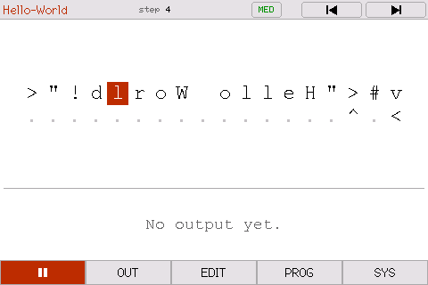
The rest of the transport sits in the status bar: reset back to the start, step, and run-to-the-end. Turn on SYS > STEP BUTTONS for two more, step back and step forward, so you can walk a program one tick at a time and back again. Stepping back rebuilds and replays, so it is instant early in a run and slow once you are thousands of steps in.
Four speeds: SLOW (about 3 steps a second), MED (25), QUICK (2000) and FULL. At SLOW each runner leaves a short fading tail, which is how you follow what it is doing. However fast you set it, a run always starts slowly for a second so you can see the runners set off. FULL skips that, on the basis that asking for FULL means you want the answer and not the show.
ZOOM shows the program at the editor's size, twenty columns and seven rows at a time; WIDE shows eighty columns and twelve rows. A program that fits ZOOM whole is simply shown that way. Whichever you pick, EDIT shows the program at the same size and in the same place, so moving between the two pages moves nothing. Small arrows on the grid's edges page through a program larger than the window, and only appear on the sides where there is more to see. Opening EDIT pauses a run.
Under the grid — see what each runner is doing
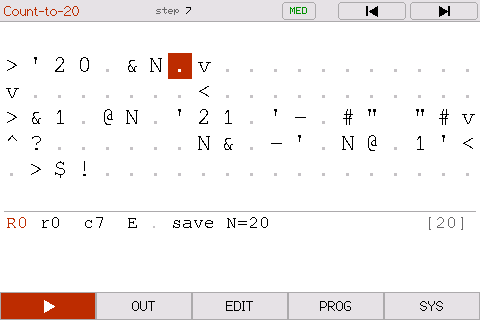
SYS > UNDER GRID decides what the strip under the program shows.
OUTPUT is what the program has printed so far. RUNNERS gives every
runner a line: its row and column and which way it faces, the character it is
standing on, what that character will do when the runner steps, and the top of
its stack, newest value last. This is the interpreter's own debug log, and the
quickest way to see what a program you are writing actually does: put a few
characters down in EDIT, come back to RUN, and step through them with
STEP BUTTONS on. A program can ask for a particular strip in its tag: d
for the runner readout, n for nothing underneath, which gives the program
the whole screen (see Telling a program how to show itself).
OUT — read what it printed
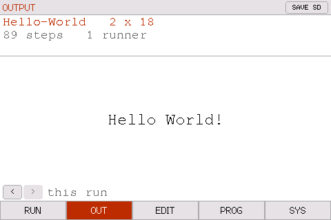
When a run finishes the OUT tab gets a dot and the RUN tab turns into a go-again arrow.
You can watch output being generated live on the OUT tab while a program is running.
It also keeps the last ten runs. The < and > buttons at the bottom step
back through them, each with what it printed and how many steps it took.
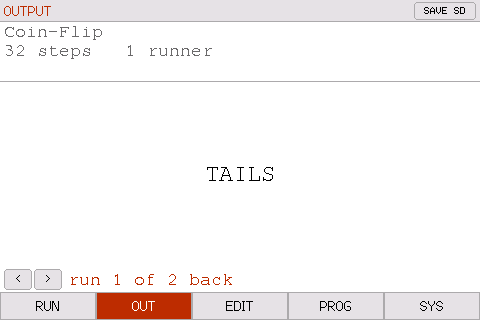
SAVE SD writes whichever run you are looking at to the card. It only appears when there is a card in the slot.
EDIT — change it with your finger
Tap a cell to put the cursor there, then type. . is the blank, so it doubles
as delete.
The main keyboard is the thirty-three characters you actually write IRCIS with. Tapping EDIT while you are already on it cycles the keyboard to CAPITALS and then the lower case. The tab tells you which keyboard you are looking at.
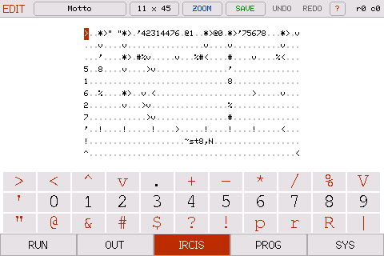 |
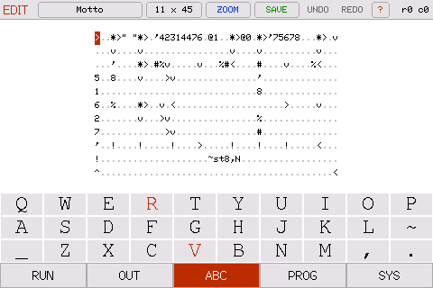 |
? in the status bar opens the command list, so it is one tap away while
you are writing.
The size button next to the name reshapes the program, and has two pages. The first adds or removes rows and columns at the edges. The second inserts a row or column, or deletes one, inside the grid rather than at its edges.
- UNDO / REDO go back through the last 128 cell edits.
- The size button asks which side to add to or take from: top, bottom, left or right.
- PROG grows a Discard changes row whenever there is something to throw away.
PROG — pick a program
Sixty-one programs come with it, sorted into folders. Tap a folder to go in, Back to come out.
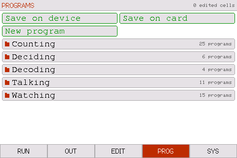 |
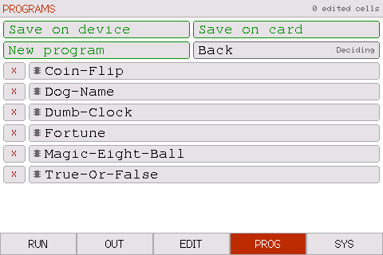 |
Programs live in two places, the board's own flash and the SD card, and the
list merges them. A chip mark means it is on the device, a notched card means
it is on the SD card. Tap one to load it. X deletes it.
The two Save rows write the current program to either store, into whichever folder you are looking at. New program... gives you an empty grid at any size up to 32 x 96, and on the app and the emulator the same dialog has a PASTE FROM THE CLIPBOARD button, which loads whatever program is on the clipboard. On the emulator Ctrl/Cmd-V does the same from any page.
The app has one store, the phone's own, so it has one Save row, and two rows
the board does not have: Share this program hands the program to another
app through the phone's share sheet, and Open a file loads a .txt file
from the Files app.
Nothing here is precious: edit a built-in program, save over it, rename it,
delete it. SYS > RESTORE BUILT-INS puts the originals back and leaves
anything you made alone.
SYS — settings
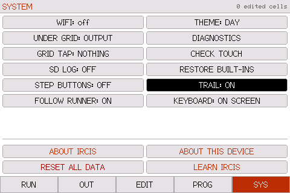
WiFi, what sits under the grid, what tapping the grid does, SD logging, a day/night palette, and restoring the built-ins. LEARN IRCIS shows where the learning guide is, with a QR code a phone can scan to open it.
TRAIL keeps every cell a runner has crossed tinted, so the whole path
builds up on screen. The same thing t in a program's tag asks for.
FOLLOW RUNNER decides whether the view chases the runner through a program
larger than the window. On for a program too big to see at once; off when you
want the view to stay where you choose. Scrolling by hand holds the view still
until the next run either way. A program can ask for it off with h in its tag.
CHECK TOUCH asks you to tap three rings and tells you how far out the worst one was, then offers to recalibrate. A key is about 43 px wide, so within six pixels is fine and much past fourteen is worth redoing.
DIAGNOSTICS is live while you watch it: free heap, steps per second, and
whether the run read anything out of bounds. If a runner died of anything other
than reaching ! or walking off the edge, it is listed there with the cell it
was standing on and the interpreter's own words for what went wrong, such as
runner 0 died at row 0, col 7: Variable name 'size2' should contain only
alphabets. Every death is written to the serial console as well.
The programs
Sixty-one of them. The full list is in programs/.
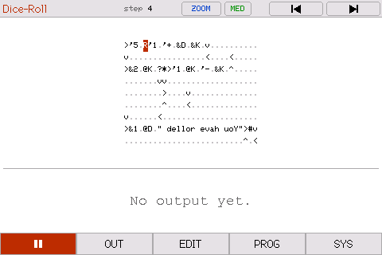 |
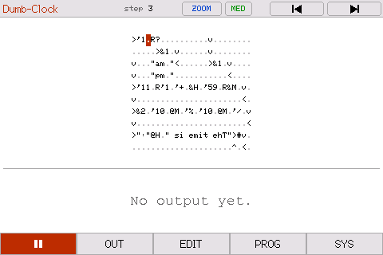 |
| Dice Roll. It rolls, prints the number, then puts exactly that many runners into a ring, so you can count the answer going round. | Dumb Clock. It invents a plausible time and reads it out in words. |
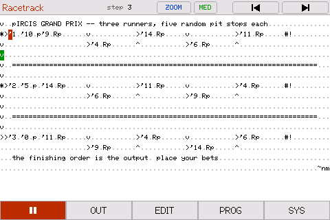 |
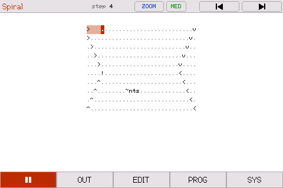 |
| Racetrack. Three runners, five random pit stops each. The finishing order determines the winner. | Spiral. One runner winding inward over every cell. Eight programs print nothing at all and are just worth watching. |
A few are hiding what they do until you run them:
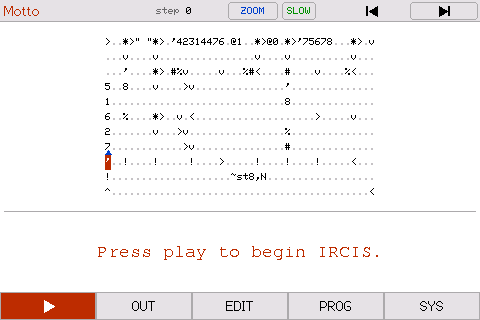
That is the whole of Insult Machine. Every word in it is carried as a
number, because % prints an integer as base64 characters, so there is not a
letter to read anywhere in the grid.
Dog Name does the same but picks its numbers with two coin flips, and
Warning does not even write the numbers down: each one is a quotient and a
remainder, multiplied back out as it runs.
Morse Decoder turns morse back into a word. The whole top row is yours: put
one code per letter after the '0., left to right. 1 is a dit and 2 is a
dah, so '1111.'1.'1211.'1211.'222. gives HELLO. The row underneath says so on
the device, with arrows pointing at where to type. It walks a binary tree for
each letter. Five letters is the ceiling: the answer is built up in a single
integer, and an int32 holds exactly five base64 characters.
The rest are counting loops, times tables, one-of-four answer machines, the Morse alphabet on two screens, and ten correct digits of π out of Machin's formula, in a language with 32-bit integers and no arrays.
Telling a program how to show itself
A program can say how it wants to be displayed, in one short tag written anywhere in the grid. A tilde, then single letters:
under the grid: n nothing d runner readout
speed: s slow m med q quick f full
path: t keep every cell a runner has crossed tinted
hold the view: h do not follow the runners while it runs
start position: <row>,<col> and one of N E S W
So ~nm3,1N means: nothing underneath, medium speed, start at row 3 column 1
heading north. Order does not matter. Loading a program puts the speed,
follow and start point back to their defaults and then applies the tag, so
anything you leave out is the default and most programs need no tag at all.
The readout and the trail are yours: a tag that names one takes it over only
while that program is loaded, and the SYS tiles show what is in force. GRID
TAP, STEP BUTTONS, the theme and the keyboard are the device's own settings
and stay as you set them.
t is the interesting one. Normally a runner shows a short tail and the cells
behind it go back to normal. With t, every cell any runner has stood on stays
tinted, so the whole path builds up and stays on screen. That is what makes the
h is the other one worth knowing. In a program larger than the window the
view normally follows the runner, scrolling to keep it on screen. For a program that draws something,
that moves the picture out from under you; h leaves the view where you put
it. There is a switch for it on SYS as well, under FOLLOW RUNNER.
Add t to
Spiral (Watching) or
Snake (Watching) and you get the same effect.
None of the tag characters is an IRCIS command, so a runner that crosses one just steps over it. A tag can sit on any blank cell in the middle of a program. Type it in on the EDIT page and save the program to keep it.
Writing your own
| Character | What it does |
|---|---|
< > ^ v |
Move the runner |
+ - * / % |
Arithmetic, in integer mode |
# |
Print the top of the stack |
% |
Print the top of the stack as base64 characters |
$ |
Newline |
! |
This runner stops |
. and space |
Blank — the runner walks over it |
" |
Toggle stack mode: characters get pushed as they are |
' |
Start a number; a blank ends it |
? |
If the top of the stack is non-zero carry on, otherwise turn |
* |
Split into more runners |
@n / &n |
Push the n'th item / pop n items |
@name / &name |
Push a variable / set one |
r / R |
Random 0 or 1 / random up to a limit |
p |
Pause this runner for n ticks |
Four things are easy to get wrong:
- Arithmetic takes the top of the stack as the left operand. Push 10 then 3
and
'-.gives -7, not 7. ?does not pop. It looks at the top and leaves it there, so a branch has to clear up after itself.- Text is pushed, so it comes out backwards. Write it reversed in the grid.
- A cell holds one instruction. A path that crosses one of its own turns will take that turn again and loop for ever.
The full command list and the language rules are in Arjun Nair's README.
I've written this guide as well: Learn IRCIS, which teaches the language from scratch and builds up to writing your own programs. Every example in it is a real program you can run.
If you write one you are pleased with, send it in and it can go on the programs page of the website.
On the board
Three things the board has that the app does not.
Over WiFi
SYS > WIFI serves the device on your network. Via a browser on a computer
connected to the same network, you can see the last run, an editable copy
of the loaded program, both program stores, and the saved outputs. You can
paste a program in from a browser and it runs on the device.
There is no password on any of it. Anyone who can reach the board can read what is on the card and write a program onto it. That is fine for something on your own desk, but it should be your choice. Turn WiFi off on a network you share.
Over serial
The emulator has this too, through the terminal it was started from.
The serial console (115200) drives the same grid as the screen:
grid print the loaded program
cell 3 12 v set one cell
run
out print what it produced
report the whole run, with statistics
help lists the rest. Output is mirrored to serial as it appears, so you can
watch a long run from a laptop.
One more program
There is an IRCIS program on this device that the list does not show.
It is encrypted, and two words open it. Enter them correctly and you get an easter egg. The iOS app leaves it out: the board and the emulator carry it, the phone does not.